Colaboradores: Salvador y Elena
19 de abril (19/4)
Descargar .docx (Archivo Word)5) Resolvé los siguientes cálculos mentalmente. Los de la primera columna te pueden ayudar a resolver los de la segunda columna.
| 550+450= | 554+456= |
| 2000-600= | 2000-650= |
| 10300-2000= | 10300-3000= |
| 3540+2000= | 3000+2540+400= |
| 12100+5300= | 12150+5350= |

22 de abril (22/4)
Descargar .docx (Archivo Word)Cálculos mentales de multiplicación y división
-A partir del 8, obtené los números siguientes usando, en cada caso, una sola multiplicación o división. Anotá el cálculo que realizaste. Luego comprobá con calculadora:
8 - 80 - 2000 - 6000 - 18000 - 3000 - 1500 - 5
23 de abril (23/4)
Descargar .docx (Archivo Word)- Leé con atención la siguiente problemática y resolvela:
Charo dice que mirando el precio se da cuenta de cuantos billetes de $1000, de $100, de $10 y cuantas monedas de $1 tiene que sacar de la billetera para pagar justo ¿Cómo les parece que hará?
Prueben con este precio ¿Cuántos billetes de $1000, de $100, de $10 y cuantas monedas de $1 podrán usarse para pagar justo?
44.404 Respuesta:
• Con cual o cuales de estos cáculos se obtiene el número 16.987? Podes resolverlo sin hacer la cuenta. Solamente observando y tratando de hacer cálculos mentales.
• En un juego hay targetas con diferentes puntajes:
100.000, 10.000, 10 y 1.
A) ¿Cómo harían para formar 110.101 usando estas targetas?
B) ¿Hay una sola posibilidad?
29 de abril (29/4)
Descargar .docx (Archivo Word)• ¿Con cuáles de estos cálculos se obtiene el número 25.843?
| Número | ✔/❌ |
|---|---|
| 2x10.000+5.000+843 | |
| 25x1000+3x1+4x10+100x8 | |
| 2x10000+8x1000+5x100+3x10+4x1 |
En un juego hay tarjetas con distintos puntajes: 100.000, 10.000, 1.000,
100, 10 y 1. ¿Cómo harían para formar estos puntajes con la menor cantidad de tarjetas?
A) 134.003=
B) 987.999=
C) 1.111.075=
• ¿Con cuáles de estos cálculos se obtiene el número 756.137?
| Número | ✔/❌ |
|---|---|
| 75x10.000+6x1.000+1x100+3x10+7 | |
| 7x100.000+5x100+6.137 | |
| 7x10.000+56x1.000+7x1+3x10+100x6 |
2 de mayo (2/5)
Descargar .docx (Archivo Word)
Usar la calculadora para estudiar números.
1) María dice que usando la calculadora ella puede transformar el número 36.281 en 30.281 con un solo cálculo. ¿Será posible? Explicá como lo pensaste.
2) En el visor de una calculadora aparece el número 12.937. Santino dice que hizo un solo cálculo y logro que en el lugar del 9 apareciera un 5 sin modificar los otros números. ¿Es posible? Explicá como lo pensaste.
3) En cada pregunta, primero anotá los números y luego probá si está bien usando la calculadora.
A) ¿Qué número hay que sumar a 1.111 para transformarlo en 1.121?
B) ¿Y para pasar de 1.111 a 1.211?
C) ¿Y de 1.111 a 2.111?
4) ¿Qué cálculo con la calculadora se puede hacer para transformar el número 110.110 en el número 111.111?
5) ¿Qué cálculo con la calculadora se puede hacer para transformar el número 205.480 en el número 215.490?
6) En el visor de la calculadora aparece el número 19.564. Teki dice que si suma 1.000 cambia solo el número 9 que está en el lugar de los miles. ¿Creés que tiene razón? Explicá por qué.
3 de mayo (3/5)
Descargar .docx (Archivo Word)7) Completá la tabla. Después comprobá con la calculadora.
| Número | Cálculo | Resultado |
|---|---|---|
| +7.000 | 9.000 | |
| -1.200 | 2.800 | |
| -3.050 | 5.500 | |
| -700 | 10.000 |
8) Decidí cuáles de estas igualdades son correctas sin hacer cuentas. Después podés comprobar con la calculadora.
| Igualdades | ✔/❌ |
|---|---|
| 75.908+6.323=6.323+75.908 | |
| 54.236+21.090=50.000+21.000+230+90 | |
| 104.622+80.400=180.000+4.000+1.000+22 | |
| 73.500+68.230=608.203-73.500 | |
| 91.000-52.300=91.000-52.000-300 |
8 de mayo (8/5)
Descargar .docx (Archivo Word)1) ¿Cuánto le sumarías a 205.974 para transformarlo en estos números? Completá la tabla y luego comprobá.
| Número | ¿Cuánto le sumarías? | Para transformarlo en |
|---|---|---|
| 235.974 | ||
| 205.974 | 3.205.974 | |
| 206.074 |
2) ¿Cuánto le restarías a 5.479.362 para transformarlo en estos números?
| Número | ¿Cuánto le restarías? | Para transformarlo en |
|---|---|---|
| 5.409.362 | ||
| 5.479.362 | 5.000.362 | |
| 5.479.000 |
13 de mayo (13/5)
Descargar .docx (Archivo Word)Para hacer todos juntos
- ¿Son los verdaderas las siguientes afirmaciones? ¿Cómo podemos averiguarlo? Sacamos conclusiones y anotamos
| A) El resultado de 240x34 es el mismo que el resultado de 34x240 | E) Si se multiplican por 5 los resultados de la tabla del 4, se obtienen los resultados de la tabla del 20 |
| B) Si se suma el resultado de 7x8 más el resultado de 7x9, se obtiene el resultado de 7x17 | F) Si se dividen por 2 los resultados de la tabla del 10, se obtienen los resultados correspondientes de la tabla del 5 |
| C) Si se quiere averiguar el resultado de 9x5, se puede hacer 9x2 y sumarle 3 | G) Si se multiplica 57x41x39x18x0, el resultado será menor que 1 |
| D) Si se suman los resultados de la tabla del 7 con los resultados correspondientes de la tabla del 8, se obtienen los resultados de la tabla del 15 | H) Si se multiplica 52x26x0, dará el mismo resultado que si se multiplica 98x36x0 |
14 de mayo (14/5)
Descargar .docx (Archivo Word)Cálculos mentales de multiplicación y división
1) Resolvé los siguientes cálculos mentalmente y luego verificá con la calculadora.
| 5.000x10= | 5.000x20= | 5.000x50= |
| 500x100= | 5.000x200= | 5.000x500= |
| 600:10= | 600:20= | 600:30= |
| 6.000:100= | 6.000:200= | 6.000:300= |
17 de mayo (17/5)
Descargar .docx (Archivo Word)1) Usando que 7x100=700, resolvé mentalmente y luego explicá que hiciste.
7x101=
7x99=
2) Usando que 700:10=70, resolvé mentalmente y luego explicá que hiciste.
700:5=
700:50=
3) Juan pidió un préstamo al banco para invertir en su negocio, y lo devolvió en 3 cuotas.
La primera cuota que pagó fue de $25.600, en la segunda pagó $2.500 más que en la primera, y en la tercera pagó $2.090 más que en la segunda.
Con las tres cuotas pagó en total de lo que debía. ¿Cuánto dinero le devolvió al banco?
Resolvé
- Luana usa 250g de harina para hacer un biscochuelo y 500g de harina para 10 pizzetas. Quiere preparar 2 biscochuelos y 30 pizzetas para un cumple. Tiene 1.500g de harina ¿Le alcanza? ¿Le sobra? ¿Cuánto?
- El verdulero hizo algunas compras en el mercado. El cajón de acelga le costó $210 y trae 10 paquetes, el cajón de naranjas le costó $336 y trae 12k, y el cajón de manzanas le costó $600 y trae 15k. Si vende el paquete de acelga a $30, el kilo de naranja a $35 y el kilo de manzana a $38 ¿Cuánta plata recibirá el verdulero si vende el total de esta mercadería?
20 de mayo (20/5)
Descargar .docx (Archivo Word)• Un producto que vale $14.000 al contado, puede pagarse de distintas formas, en planes de cuotas.
Plan 1: 12 Cuotas de $1.500 cada una.
Plan 2: 6 Cuotas de $2.800 cada una.
¿Cuánto más caro resulta pagar en 12 cuotas que al contado? ¿Y cuánto más caro en 6 cuotas que al contado?
21 de mayo (21/5) -Hecho por Constanza
Descargar .docx (Archivo Word)Julia nació en el año 2009, tiene 2 hermanos, León de 10 años y Toti de 8 años. Ella ahorra todos los días en su alcancía $25, que le regala su tía abuela de 58 años. Ordenando sus juegos y su ropa encontró 3 monedas de $10, 2 billetes de $20 y 7 monedas de $5, y todo fue a la alcancía. La semana pasada Julia le devolvió a León $34 que le debía, y luego Toti le devolvió a Julia $89 que le había prestado.
La semana que viene Joaco y Ana le regalarán a Julia por su cumpleaños $190 para que haga con ellos lo que quiera, y ella dice que los va a ahorrar. Además, el papá de Julia le regaló 3 billetes de $50 y uno de $100 para que guarde en su alcancía.
A) Si hace 82 días que está ahorrando ¿Cuánto dinero tiene?
B) ¿Cuántos días más tiene que seguir ahorrando Julia para tener los $3000 que necesita para un juguete que se quiere comprar?
27 de mayo (27/5)
Descargar .docx (Archivo Word)Relaciones entre la multiplicación y la división
1 a) Buscá un número que multiplicado por 9 de 405, y también uno que multiplicado por 12 de 6.732.
b) Buscá un número que dividido por 14 de 42, y también uno que dividido por 72 de 210.
28 de mayo (28/5) -Hecho por Nahiara
Descargar .docx (Archivo Word)2) Usando el cálculo resuelto, determiná mentalmente el resultado de los otros.
| 230x8=1.840 | 514x15=7.710 |
| 1.840/230= | 7.710/15= |
| 1.840/8= | 7.710/514= |
| 340/68=5 | 384/24=16 | 8.041/43=187 |
| 340/5= | 384/16= | 8.041/187= |
| 68x5= | 24/16= | 187x43= |
29 de mayo (29/5)
Descargar .docx (Archivo Word)3) Completá estas cuentas:
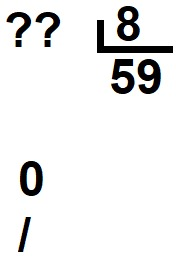 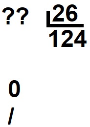 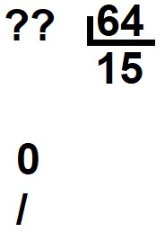4) Se dividió un número por 9 y se obtuvo como cociente 84 y resto 0.
a) ¿Qué número se habrá dividido?
b) Y si se obtuvo resto 4 con el mismo cociente y divisor, ¿Qué número se dividió?
30 de mayo (30/5)
Descargar .docx (Archivo Word)5) Usando que 26x16=416, calculá:
| 26x32= | 13x16= |
| 52x32= | 26x160= |
| 260x16= | 26x80= |
4 de junio (4/6)
Descargar .docx (Archivo Word)- Analizamos las siguientes situaciones:
1) Andrea resolvió estos cálculos:
| 1.600x28= | 230x90= | 600x360= |
Mientras resolvió, ¿Cómo pudo haber usado estos cálculos?
| 1.600x8= | 230x60= | 600x140= |
| 1.600= | 230x30= | 600x250= |
5 de junio (5/6)
Descargar .docx (Archivo Word)2 a) ¿Cómo pueden resolverse los siguientes cálculos con una calculadora en la que no funcionan las teclas 4, 2, + ni -?
b) ¿Y si se usa una calculadora en la que no funcionan las teclas 5 y 7 pero si las demás teclas?
6 de junio (6/6)
Descargar .docx (Archivo Word)Propiedades de la multiplicación
Propiedad conmutativa: Si se cambia el orden de los factores, el resultado no cambia. Por ejemplo: 23x27=27x23
Propiedad asociativa: Si se descomponen en factores uno o todos los números que intervienen en una multiplicación, o se agrupan de diferentes maneras, el resultado no cambia. Por ejemplo: 15x9=5x3x9=5x3x3x3=5x9x3=135
Propiedad distributiva: Una multiplicación entre dos números se puede resolver descomponiendo uno de ellos en una suma y multiplicando cada uno de los sumandos por el otro número. Finalmente, se suman ambos productos. Por ejemplo: 4x23=4x(20+3)=4x20+4x3=80+12=92
O bien, es posible descomponer uno de los factores como una resta. Por ejemplo: 5x27=5x(30-3)=5x30-5x3=150-15=135
Si se multiplica cualquier número por 0 (cero), el resultado es 0, al cero se lo llama elemento nulo de la multiplicación.
12 de junio (12/6)
Descargar .docx (Archivo Word)• ¿Como explicarías usando las propiedades qué estudiaron, los procedimientos que hicieron estos chicos?
Lautaro:
| 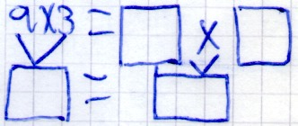 | 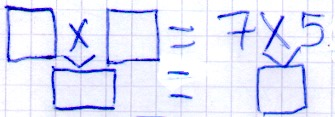 |
| 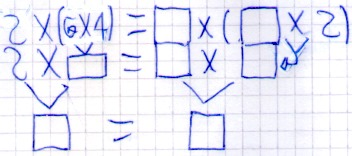 |
| 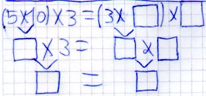 | 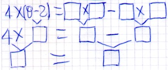 |
1) Para multiplicar 7x999, Ramiro hace 7x1000 y al resultado le resta 1, porque 999 es 1 menos que 1000 ¿Es correcto su razonamiento?
24 de junio (24/6)
Descargar .docx (Archivo Word)2) ¿Qué propiedad se usa en esta cuenta de multiplicar?
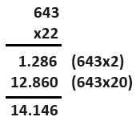
3) Usando estos resultados, completá la tabla.
35x2=70
35x3=105
35x4=140
| 35x | 5 | 6 | 10 | 11 | 12 | 20 | 26 | 31 | 38 |
|---|---|---|---|---|---|---|---|---|---|
| Resultado |
4) Sin hacer las cuentas, decidan cuál o cuáles de los siguientes cálculos dan el mismo resultado que 236x28
| Cálculos | ✔️/❌ |
|---|---|
| 200x28+30+24+6x28 | |
| 236x30-236x2 | |
| 236x27+236 |
25 de junio (25/6)
Descargar .docx (Archivo Word)5) Magui, Valentino y Enrique debían resolver 1944:18 ¿Quién o quiénes obtuvieron el resultado correcto?
A) Magui hizo 1944:10, después 1944:8 y sumo ambos cocientes.
B) Valentino resolvió 1944:2 y al cociente lo dividió por 9.
C) Enrique hizo 1944:36 y al cociente lo dividió por 2.
26 de junio (26/6)
Descargar .docx (Archivo Word) La división y sus propiedades
! En la división no se cumplen las mismas propiedades que en la multiplicación.
Propiedad distributiva: Es válida para la división respecto a la suma y a la resta cuando se descompone el dividendo, por ejemplo: 250:50=200:50+50:50, sin embargo, no es válida cuando se descompone el divisor, por ejemplo: 250:50=200 ≠ 250:50+250:25.
Propiedad asociativa: No se cumple en la división. Por ejemplo, si se quiere resolver 600:15=(600:5):3. En cambio, el resultado sería diferente si se hace 600:(5:3). El modo en que se agrupan los números puede hacer cambiar el resultado del cociente y del resto.
Cuando se presenta un calculo como 250:10:2 y no se indica el orden usando paréntesis, se realiza primero 250:10 y al cociente se lo divide por 2.
Propiedad conmutativa: Tampoco se cumple, si se cambia el orden de los números que se dividen, cambia el resultado. Por ejemplo: 129:3≠3:129.
27 de junio (27/6)
Descargar .docx (Archivo Word)División:
Propiedad conmutativa: 24:8≠8:24 | NO
Propiedad asociativa: (24:4):2≠24:(4:2) | NO
Propiedad distributiva: (26+20):2=(26:2)+(20:2) | SI
- Teniendo en cuenta las propiedades, resolvé:
1) Sin hacer los cálculos, colocá ✔️(Verdadero) o ❌(Falso).
| Cálculo | ✔️/❌ |
|---|---|
| 46x72=72x46 | |
| 6x27=3x27+2+27 | |
| 5x48=5x4x2x6 | |
| 5x40+8 |
2) Decidan si estos cálculos tienen el mismo resultado que 327x24. Justifiquen sus respuestas usando las propiedades de la multiplicación y sin hacer las cuentas.
| Cálculo | ✔️/❌ |
|---|---|
| 300x24+20x24+7x24 | |
| 327x30-327x6 | |
| 327x23+327 |
3) Busquen cálculos que den el mismo resultado que cada uno de estos.
| Cálculo | Reemplazo |
|---|---|
| 99x6 | |
| 25x101 | |
| 38x5 | |
| 28x16 |
El funcionamiento de la división
1) Estéfano empaquetó 24 docenas de sorrentinos y le sobraron 5, ¿Cuántos sorrentinos tenía preparados?
2 a) Se dividió un número por 8 y se obtuvo 16 como cociente y resto 4, ¿Qué número se dividió?
b) Y si se obtuvo resto 6 y el mismo cociente. ¿Qué número se dividió?
3) ¿Cuál o cuáles de estos pares de números permiten completar esta cuenta?
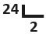
a) Divisor 12 y resto 0.
b) Divisor 8 y resto 8.
c) Divisor 9 y resto 6.
d) Divisor 10 y resto 4.
e) Divisor 6 y resto 12.
f) Divisor 7 y resto 10.
4) Calculá mentalmente:
| 150x5= | 480:5= |
| 75x50= | 4.200:50= |
| 40x500= | 6.000:500= |
5) Cecilia dice que puede saber cuánto será el resto de estas divisiones sin hacer las cuentas. ¿Cómo creen que hará para averiguarlo?
• 203:2=
• 302:5=
• 4.444:4=
28 de junio (28/6)
Descargar .docx (Archivo Word) Problemas para resolver
1) En 6 paquetes de pastillas hay 54 de estas, y en 9 paquetes del mismo tipo hay 81 pastillas.
a) ¿Qué cantidad de pastillas habrá en 3 paquetes como los anteriores? ¿Y en 18 paquetes?
b) Si sobre la mesa se cuentan 90 pastillas, ¿Cuántos paquetes iguales a los anteriores se abrieron?
c) Para responder a algunas de las preguntas anteriores. ¿Necesitaron averiguar la cantidad de pastillas que hay en un paquete? ¿Por qué?
d) Organicen todos los datos anteriores en la siguiente tabla:
| Paquetes | ||||||
|---|---|---|---|---|---|---|
| Pastillas |
2) En el barrio de Julia se están construyendo 4 casas iguales. Para cubrir el piso de una casa, los obreros calcularon un total de 240 baldosas.
a) ¿Cuántas baldosas se necesitan para 2 casas?
b) ¿Y para 4 casas?
3) Unos pintores calcularon que para pintar 6 casa iguales necesitaban un total de 540 litros de pintura. ¿Cuánta pintura calcularon que se necesitan para 3 de estas casas? ¿Y para una?
1 de julio (1/7)
Descargar .docx (Archivo Word)4) Joaquín va a comprar tejas para su techo. Un cartel dice que se necesitan 24 tejas por metro cuadrado de techo.
a) Si tiene que comprar tejas para 100 metros cuadrados de techo ¿Cuántas tejas necesita?
b) ¿Y para 200 metros cuadrados?
c) ¿Es verdad que para saber cuántas se necesitan para 300 metros cuadrados se pueden sumar las cantidades de tejas para 100 y 200 de los problemas a y b?
5) En un negocio se venden hamburguesas en cajas de 30 unidades. Completá la tabla:
| Cantidad de cajas | 30 | 31 | 32 | 35 | ||
|---|---|---|---|---|---|---|
| Cantidad de hamburguesas | 120 | 180 |
6) En una fábrica se guardan las gaseosas en paquetes de 8 botellas. Completá la tabla:
| Cantidad de paquetes | 10 | 20 | 30 | 40 | 50 | 60 | 90 | 120 | 150 | 240 |
|---|---|---|---|---|---|---|---|---|---|---|
| Cantidad de botellas de gaseosa | 80 |
7) Las cajas de galletitas chispitas traen 15 paquetes cada una. Completá la tabla para ayudar al repositor a controlar las cantidades.
| Cantidad de cajas | 4 | 8 | 16 | 20 | 24 | 38 | 54 | 63 | 86 | 98 |
|---|---|---|---|---|---|---|---|---|---|---|
| Cantidad de paquetes |
8) En una fábrica se envasan chocolates en cajas de 24 unidades. Completá la tabla:
| Cantidad de cajas | 5 | 10 | 24 | 48 | ||||
|---|---|---|---|---|---|---|---|---|
| Cantidad de chocolates | 192 | 360 | 456 | 672 |
5 de julio (5/7)
Descargar .docx (Archivo Word) Otra vuelta de problemas
- Lee con atención cada situación problemática y resolvé:
1) Para una fiesta de cumpleaños a la que asistieron 10 invitados, se van a repartir 25 barras de chocolate. ¿Cuánto chocolate se le puede dar a cada invitado? ¿Y si se quiere que todos reciban la misma cantidad de chocolate y que no sobre nada?
2) Para una fiesta de cumpleaños se decoró la casa con 25 globos. Si fueron 10 invitados, ¿Cuántos globos se le puede dar a cada uno y que no sobre nada?
3) Los 3 cursos de 6to año viajarán al museo de ciencias naturales para una salida educativa. De 6to A irán 29 personas entre estudiantes y acompañantes, de 6to B irán 27 y de 6to C irán 32. Se consiguió una empresa de transporte que tiene ómnibus en los que entran 30 personas sentadas. ¿Cuántos ómnibus necesitan pedirle a la empresa para que todos viajen sentados, como corresponde?
4) En una fábrica de celulares entre las 8 y las 9am se producen 88 dispositivos. Si se almacenan 3 por estante. ¿Es cierto que alcanza para todos los dispositivos con 30 estantes?
10 de julio (10/7)
Descargar .docx (Archivo Word) Fracciones:
- Mitades o medios.
- Dividido en porciones.
- Numerador y denominador.
- Parte del entero.
- Reparto.
- División de algo en partes.
- Se usan en la vida cotidiana (½ de pan, ¼ de pizza).
Por ejemplo:
• Pablo comió ½ de chocolate y melisa ¼ de chocolate.
- Represéntenlo gráficamente.
! Resuelvan, pueden graficar.
1) Se reparten 10 chocolates entre 4 amigos. Todos van a recibir la misma cantidad y no quieren que sobre nada. ¿Cuánto chocolate debe recibir cada uno?
2) Se reparten 3 budines entre 8 amigas en partes iguales. Y no sobra nada. ¿Cuánto budín recibe cada una?
3) Entre 5 amigas se repartieron 11 obleas. No sobró nada y todas recibieron lo mismo. Decidí si las siguientes afirmaciones son verdaderas o falsas:
| Cantidad | ✔️/❌ |
|---|---|
| Cada una comió 2 y ⅕ | |
| Cada una comió 1+½+½+⅕ | |
| Cada una comió 11/5 | |
| Cada una comió 2+⅕+⅕ |
11 de julio (11/7)
Descargar .docx (Archivo Word)4) Para repartir 17 galletitas entre 4 hermanos, Florencia hizo esta cuenta y lo explicó así:
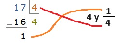
(Le toca 4 galletitas y ¼ a cada uno, porque sobra 1 y se reparte en 4 partes iguales).
5) Para repartir 62 obleas entre 4 amigos, se hizo esta cuenta. ¿Cuánto recibe cada uno si se reparte en partes iguales?
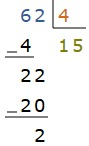
12 de julio (12/7)
Descargar .docx (Archivo Word)Para recordar:
- Si se divide un entero en 2 partes iguales, cada una de esas partes se llama “Un medio” y se escribe así ½. A su vez, si se juntan dos pedacitos de ½ se forma un entero (2/2).
- Si se divide un entero en 4 partes iguales, cada una de esas partes se llama “Un cuarto” y se escribe así ¼. A su vez, si se juntan dos pedacitos de ¼ se forma un entero (4/4).
- Si se divide un entero en 8 partes iguales, cada una de esas partes se llama “Un octavo” y se escribe así ⅛. A su vez, si se juntan dos pedacitos de ⅛ se forma un entero (8/8).
Comparar fracciones haciendo cálculos mentales
1) ¿Llegan al entero? ¿Cómo podemos averiguarlo?
2/3 | 1/2 | 3/4 | 2/8 | 6/8 | 5/10 | 4/12 | 8/10
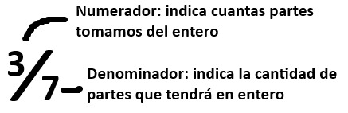
2) ¿Cuánto le falta a cada una de estas fracciones para llegar al entero?
| 3/4 | |
| 3/8 | |
| 5/8 | |
| 1/4 | |
| 1/2 | |
| 1/8 |
Cálculos mentales y problemas con fracciones
1) ¿Cuánto se pasa cada una de estas fracciones del entero?
| 15/8 | |
| 6/4 | |
| 5/2 |
2) ¿Cuánto le falta a 16/3 para llegar a 6? ¿Y cuánto se pasa de 5? 3) En un juego de cartas gana la fracción más grande. Decidí que carta gano la mano.
| 3/4 | 1/2 |
| 8/6 | 4/4 |
| 2/5 | 1/2 |
| 9/10 | 3/5 |
4) María comió 6/10 de su pizza y Juana comió 4/5 de su pizza que era igual a la de María. ¿Quién comió más?
5) Escribí 5 fracciones que sean mayores que 1 y menores que 2.
29 de julio (29/7)
Descargar .docx (Archivo Word)6) Ordená estas fracciones de menor a mayor:
| Fracción | Orden |
|---|---|
| 1/5 | |
| 9/10 | |
| 6/5 | |
| 10/5 | |
| 1/10 |
7) Ordená estas fracciones de mayor a menor:
| Fracción | Orden |
|---|---|
| 4/3 | |
| 2/3 | |
| 1/6 | |
| 10/6 | |
| 1/3 |
8) ¿Es verdad que cada suma da 1? Explicá como te diste cuenta.
½ + ⅓ + ⅓ + ⅓ =
¼ + ¼ + ¼ + ⅛ + ⅛ + ⅛ =
30 de julio (30/7)
Descargar .docx (Archivo Word)| ⅛ + ¼ + ¼ + ⅛ | |
| ⅕ + ⅗ |
| 3/8 + 2/8 | |
| 5 + 1/3 | |
| 1/2 + 1/4 + 3/4 | |
| 4 + 2/6 | |
| 1/4 + 1/8 | |
| 1/4 + 1/8 + 3/4 |
| 3/4 – 1/2 | |
| 2 – 1/4 | |
| 1/2 – 1/4 | |
| 4 – 3/4 | |
| 1/4 – 1/8 | |
| 1 – 2/4 |
31 de julio (31/7)
Descargar .docx (Archivo Word)1) Para hacer unas tartas se calcularon las siguientes cantidades. Completá las tablas:
| Cantidad de tartas | 1 | 2 | 3 | 4 | 5 |
|---|---|---|---|---|---|
| Kilos de naranjas | 1/4 |
| Cantidad de tartas | 1 | 2 | 3 | 5 | 10 |
|---|---|---|---|---|---|
| Kilos de frutillas | 3/4 |